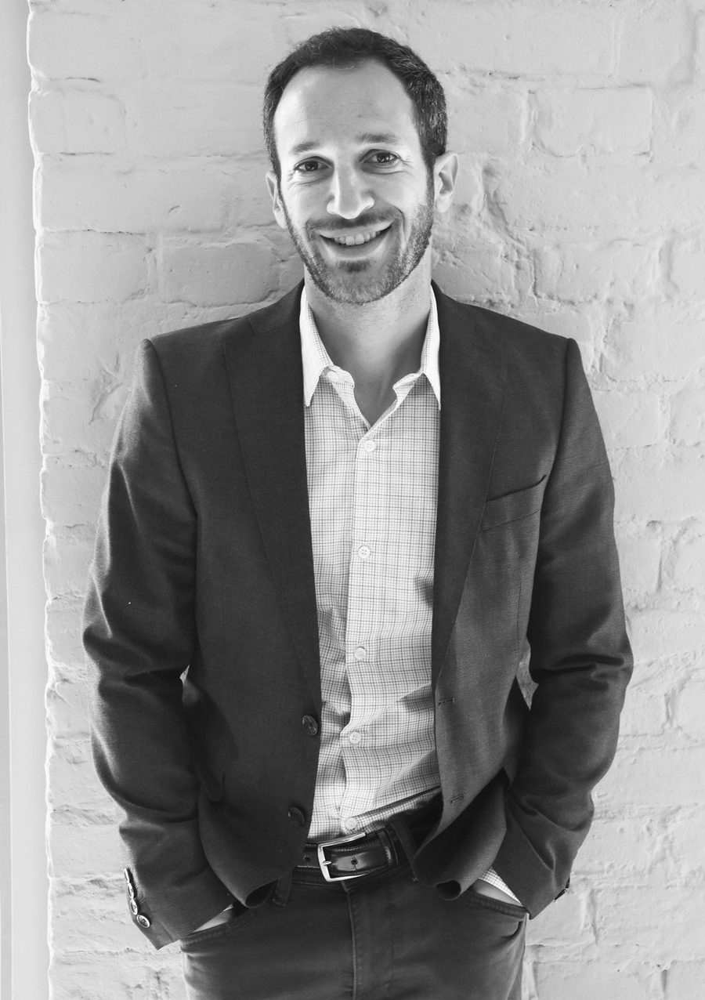

About

Aaron Wiener is an award-winning reporter, editor, and author. Until February 2026, he was the Berlin bureau chief of the Washington Post, where he had previously served as a reporter and editor in Washington, D.C.
He has worked at and written for Mother Jones, the Los Angeles Times, the Economist, Washington City Paper, and the Washington Independent (RIP). He has been part of Pulitzer Prize–winning and finalist teams. His writing focuses on the fault lines of democracy running across the Atlantic and how power dynamics in the US and Europe shape politics, media, and society.
Aaron is based in Berlin and makes frequent radio, television, and live-event appearances in both English and German.
Post Mortem
Aaron's first book is forthcoming in both English and German. It's about billionaires and the media – how the ultra-rich, initially seen as saviors when they bought up struggling publications, ended up subornating their news outlets to their own financial and political interests, with pretty disastrous results for journalism and democracy.
The central narrative focuses on the Washington Post under Jeff Bezos, but Donald Trump, the Ellisons, and Los Angeles Times owner Patrick Soon-Shiong are all major characters, as are Europe's increasingly powerful media barons.
If this sounds interesting, stay tuned for more details and preorder links.
Selected Writing
Stories about media, politics, transatlantic relations, Nazis, bratwurst, and more.
-
Was der Fall «Washington Post» für den Journalismus bedeutet
-
After 80-year bond, Germans find breaking up with U.S. is hard to do
-
Lüften, German obsession with open windows, sparks 'house burping' trend
-
Germany's anti-immigrant AfD party finds open door in Trump's America
-
Germany, where beer is sacred, now leads world in nonalcoholic brews
-
In Germany, a boxing match decides fight over birthplace of bratwurst
-
Federal workers called back to the office — or is it a shuttered Subway?
-
Federal return-to-office mandate breeds chaos, confusion — and coin flips
-
America's Real Migrant Crisis Is the One You've Never Heard Of
Awards & Recognition
-
2026Pulitzer Prize for Public Service. A small part of a big reporting team that won for coverage of Donald Trump's assault on the federal workforce.
-
2026Arthur F. Burns Prize for reporting on links between the Trump administration and Germany's far-right Alternative for Germany party.
-
2024Pulitzer Prize finalist, Illustrated Reporting and Commentary. Co-editor of an investigation into the Smithsonian's collection of human remains.
-
2015Association of Alternative Newsmedia Award for beat reporting.
-
2014Association of Alternative Newsmedia Award for blogging.
-
2011Arthur F. Burns Prize for reporting on Germany's rushed energy transition.
Contact
For freelance writing projects, media engagements, public speaking, book ideas, or random chitchat:
- Email aaron.m.wiener@gmail.com
- Signal @aaronwiener.37
- German agent Thomas Schmoll · tommy.schmoll.buero@gmail.com
- U.S. agent Anna Sproul-Latimer, Neon Literary · anna@neonliterary.com
- Bluesky @aaronwiener.bsky.social
- X @aaronwiener